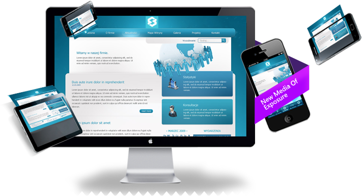
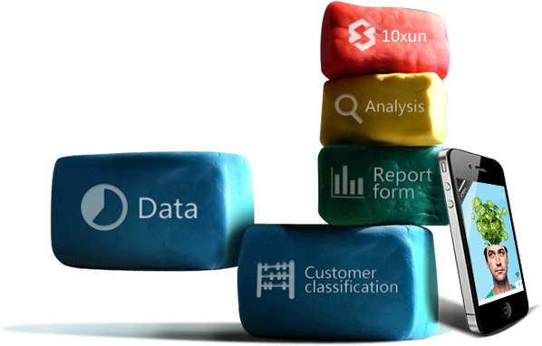

用户体验
服务型企业在最关注的用户体验以及客户反馈问题，卓云平台能够为您解决。 俏江南与时讯网合作以来，利用卓云平台的移动营销系统...
[详情]
增加用户
在过去传统销售道路中，宝马用于广告的经营在企业支出中占很大比例。 在传统营销效果趋于饱和阶段，宝马寻求移动营销解决方案。
[详情]
打造品牌
时讯网为伊美尔制作“伊美尔会员论坛”、“伊美尔活动站”、“伊美尔官网”三个wap站 通过对这三个站的运营，伊美尔...
[详情]
提升业绩
东易日盛作为中国一个最具实力的家居家装企业，和时讯网合作一年多 利用卓云平台移动营销系统，一年时间提升越30%的业绩...
[详情]
服务方式
环球雅思利用一年的时间打造出符合自己企业特点 属于自己企业风格的移动营销系统，卓云平台为它...
[详情]
战略升级
时讯常年合作伙伴“藏獒在线”利用卓云平台已经打造出属于自己的一套移动营销体系。 通过传统和移动渠道...
[详情]
移动营销怎么做？
基础设施建设
- 手机APP
- 一体化的开发流程...
- 手机网站
- 快捷的
- 企业微信微博
- 定制服务
媒体推广
- 传统媒体推广
- 纸媒、广电...
- 信息营销
- 短信彩信
- 微营销
- 微信、微博、定制
- 广告联盟
- CPA、CPV、CPS
效果评估
- 数据分析
- 统计每一个手机用户的使用痕迹，生成数据报告，企业可调取这些数据进行数据分析。 将无线应用过程中使用的所有数据进行分类整理，从而形成更有价值的数据， 并进行推广效果评定，实现竞争的二次营销方案....
为什么选择时讯卓云？
一站式解决方案
- 信息发送平台
- 手机网站自助建站系统
- 手机APP平台
- 企业定制微信平台、微博内容
- 广告联盟平台（网盟、谷歌）
- 数据分析
专业的策划和技术团队
- 拥有多年移动营销策划经验
- 为企业量身打造设计
- 传统媒体与手机媒体高校融合
- 提升企业转化率
丰富的移动广告媒体资源
- 移动广告联盟
- 5万APP及大量文化网站
- 移动营销全程服务
- 传统媒体与移动营销相结合